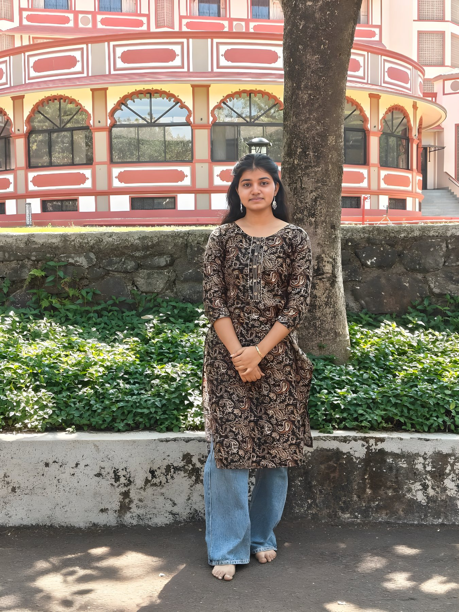

A MEMORY JUST FOR YOU · 01 / 09
A quiet little moment
I love this picture because it feels so effortlessly you. Standing there with that gentle smile, you make even the simplest place feel special. I hope you always see how lovely you are — not just in a photograph, but in every little thing you do.